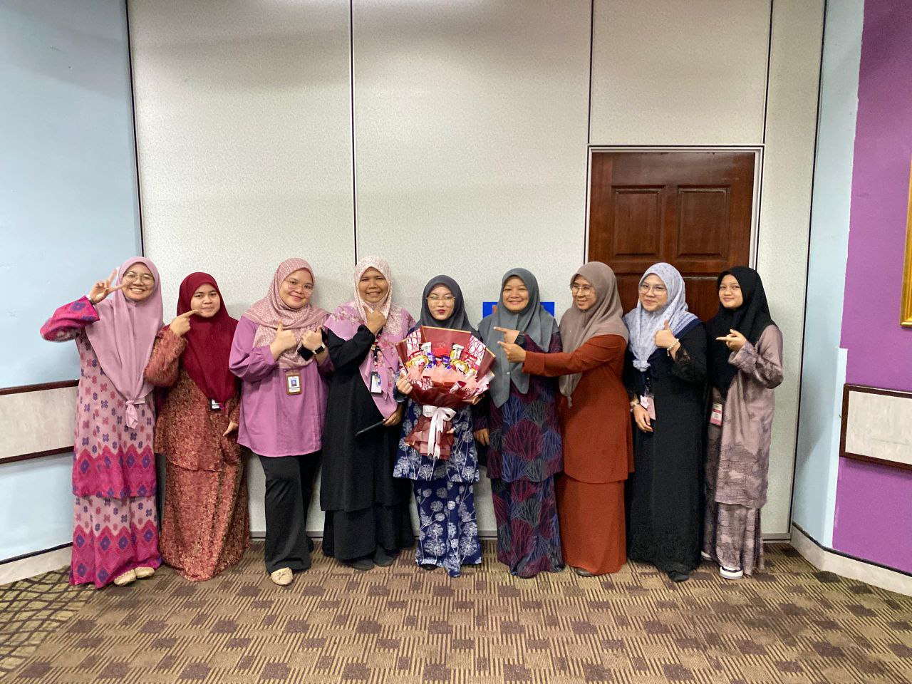

Work / Project Experience 💼
Simple experiences as a student
| Role | Organization | Period | Description |
|---|---|---|---|
| Student Developer | IMD318 Course Project | 2025 | Created a personal resume website as part of Web Content Management assignment. |
| Intern (Multimedia Tasks) | Intern ICT Department / Office | 2025 | Joined team multimedia, updating records and assisting staff with simple manual system. |
Volunteer & Activities 📢
- Participated in faculty events as a student helper.
- Joined small group projects for digital content.
- Assisted friends with formatting assignments and basic computer tasks.
What I Learned 📝
Through these small experiences, I improved my communication, teamwork, and time management skills. I also developed confidence in using digital tools and managing basic information tasks, which are important for my course.
Internship Experience at Hospital Segamat 🏥
I completed my internship at Hospital Segamat where I assisted in basic multimedia tasks, record management, and supporting staff with simple information processes.


TikTok Video Merdeka Competition 📳
During my internship, I participated in a TikTok Merdeka Video Competition, which improved my creativity and video editing skills. I also used Canva to edit my video.